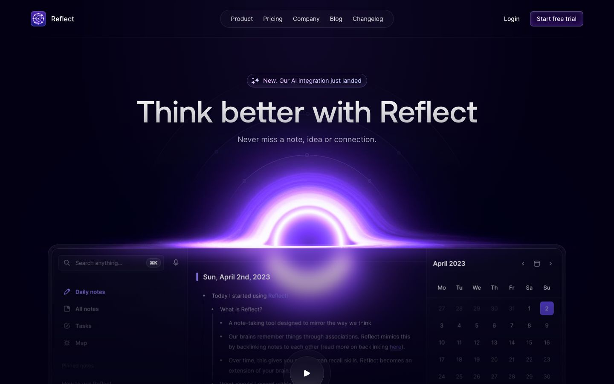

References / Website / 318
Reflect notes website
A note-taking app shown as a dark, translucent window that a violet light glows through.
- Source
- reflect.app
- Creator
- Reflect
- Style
- Glassmorphism (agent-proposed, not yet reviewed by a person)
- Moods
- Luminous, technical, calm
- Evidence
- Captured with
tools/capture.mjs(headless Chrome, 1440 × 900) on 28 September 2026 and inspected. Nothing covers the page. A Superdesign article names Reflect as a glassmorphism example; that claim was not relied on. - Reviewed
- Rights
- Third-party work, stored with credit for commentary. License: unverified. Rights policy
Observed
- The page is near-black navy. A bright violet and white ring of light, like an eclipse, sits behind the top edge of an app window.
- The app window is dark and translucent: the violet glow shows through its middle column as a soft haze.
- The window has rounded corners and a thin light border. Inside it, a sidebar, a note, and a calendar use grey and white sans-serif text.
- The top navigation links sit in one dark pill with a thin border. ‘Start free trial’ is a violet button with a light border.
Why it belongs
Measured: blur share 0.21, median radius 6 px, 27 % of boxes bordered, and 62 % with gradient fills. It fails five of six metrics, so the glass effect here comes from one large element rather than many cards. It is the dark, glow-lit variant of the style, close to the look of many AI and developer-tool sites.
Borrow
Put a single bright glow behind the top edge of a dark glass panel so that the light seems to pass through it.
Measured
Machine-extracted by tools/extract-traits.js on . Full measurement.
- Type families
- Inter V (96%), AeonikPro (4%)
- Type scale ratio
- 1.31
- Median radius
- 6 px
- Mean chroma
- 0.07
- Palette
- #030014 80%
- #f4f0ff 11%
- #ffffff 8%
- #9382ff 1%
- #e59cff 0%
- #ba9cff 0%
- #9cb2ff 0%

